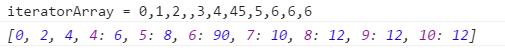

数组方法使用与说明
1.创建数组（2）
- （1）使用Array构造函数：
var colors = new Array(); - （2）使用数组字面量表示法：
var colors = [1,2,3,4];
2.检测数组（2）
- （1）使用instanceof操作符
value instanceof Array - （2）ECMAScript5添加了新的方法
Array.isArray(value)确定是否数组，兼容IE 9+，Firefox 4+,Safari 5+,Opera 10.5+和Chrome。
3.转换方法（3）
所有对象都具有toLocaleString()，toString()，valueOf()方法。toString方法返回数组中每个值得字符串形式拼接成一个以逗号分隔分字符串， valueOf返回的还是数组。另外转换方法还有join()，其参数是分隔符，如果不传入任何参数或者传入undefined，会使用逗号作为分隔符。
tip：如果数组中的某一项是null或者undefined，那么该值在以上方法的返回值中会以空字符串表示。
4.栈方法（2）
栈是一种后进先出的的数据结构。push()方法可以接收任意数量的参数，把它们组个添加到数组末尾，并且返回添加后数组的长度。 pop()方法则从数组末尾移除最后一项，减少数组的length值，然后返回移除的项。
tip：IE7及更早版本对JavaScript的实现中存在一个偏差，unshift()方法总是返回undefined而不是数组的新长度。
5.队列方法（3）
队列是一种先进先出的结构。对于js数组来说，push()从数组末尾添加，这个跟栈方法一致， shift()从前端移除,另外ECMAScript还提供了unshift()方法从前端添加任意数目的元素，unshift 多个元素时，其在数组中的顺序同推入顺序，例如array.unshift(1,2)，结果array = [1,2]。
6.重排序方法（2）
reverse()反转数组顺序,sort()按照升序排序数组项。sort()方法会调用每个数组项的toString()转型方法， 然后比较得到的字符串。这两个方法都会改变原数组。sort()可以接收一个比较函数。比较函数接收两个参数，如果第1个参数应该位于 第2个参数之前，应该返回负数，如果第1个参数应该位于第2个参数之后，应该返回正数。
7.操作方法（3）
concat()方法会先创建当前数组一个副本，然后将接收到的参数添加到这个副本的末尾，最后返回新构建的数组，concat()不会影响原数组。 slice()基于当前数组的一项或多项创建一个新的数组，不会影响原来的数组。splice()的主要用提是想数组的中部插入项，删除：指定两个参数 需要删除的第一项位置和要删除的项数；插入：指定位置插入任意的像，参数包括起始位置、要删除的项数和要插入的项；替换：同插入。
tip:如果slice()方法的参数中有一个负数，则用数组长度加上该数来确定相应的位置，如果结束位置小于起始位置则返回空数组。
tip:splice()返回的是删除的数组项组成的数组对象。
8.位置方法（2）
两个位置方法：indexOf()和lastIndexOf()，接收两个参数：要查找的项和（可选的）表示查找起点位置的索引。indexOf从数组头 开始向后查找返回第一个符合条件的索引值，lastIndexOf()从末尾向前查找返回第一个符合的索引值，没找到的话则返回-1，查找使用的是严格相等（===）。
9.迭代方法（5）
每一个迭代方法都接收两个参数，一个要在每一项上运行的执行函数function，一个可选参数作用域对象——影响this的值。 执行函数有3个参数，分别是数组项的值、该项在项目组中的位置和数组对象本身。迭代方法：some()，every()，forEach()，map()，filter()兼容IE 9+，Firefox 2+,Safari 3+,Opera 9.5+和Chrome
tip:实践证明如果数据项为undefind时会被忽略。
tip:forEach()的返回值是undefined。
tip:除了forEarch()其他方法的都有return。
tip:map的返回结果如果是稀疏数组，将会如下显示：
10.归并方法（2）
ECMAScript5新增的两个归并数组的方法：reduce()和reduceRight()，接收两个参数，一个在每项上调用的执行函数和可选的作为归并基础的初始值。 执行函数接收4个参数，前一个值、当前值、项的索引和数组对象。兼容IE 9+,Firefox 3+,Safari 4+,Opera 10.5和Chrome。
参考书籍
《JavaScript高级程序设计》